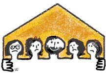

پذيرش > تریبون > مقالات > لایحه حمایت از خانواده برای رفع کدام کاستی است ؟ / ماني روحي


 لایحه حمایت از خانواده برای رفع کدام کاستی است ؟ / ماني روحي لایحه حمایت از خانواده برای رفع کدام کاستی است ؟ / ماني روحي
20 دی 1386 - - نسخه قابل چاپ
لایحه حمایت از خانواده به دلیل لزوم "تطبیق قوانین جاری با مسایل روز" و" رفع کاستی ها و نواقص در قوانین موجود بر نهاد خانواده " از طرف هیئت دولت به منظور بررسی و تصویب به مجلس شورای اسلامی ارائه شده است.
چه چیز دولتمردان را به تنظیم چنین لایحه ای سوق داده است، که در آن شان وکرامت انسانی زن به عنوان یک رکن اصلی خانواده زیر پا نهاده شده است؟ معضل ویا بهتر بگوییم فاجعه ای که این لایحه به عنوان راه حل برای آن تنظیم شده بزرگتر از آن است که چنین لایحه ای درمان آن باشد.
می دانیم که آثارو تبعات جنگ تا چند سال پس از آن همچنان ادامه دارد، جدا از پیامدهای جانی ومالی، فقر مالی و بحران هویت از جمله عواقب ناشی از جنگ هستند. گفته می شود که استدلال لایحه نویسان برای ارائه لایحه حمایت خانواده، راه حلی برای جمعیت بالای زنان نسبت به مردان و ممانعت از رشد و گسترش فقر جامعه و به ویژه فقر زنان بوده است. هر چند هر دو دليل ارائه شده فاقد وجاهت منطقي و عيني است ، چنانچه نتايج سرشماري 85 موضوع جمعيت بالاي زنان نسبت به مردان را رد کرد و تجربه نشان داده است که فقر پديده اي نيست که با چنين راه حلهايي مهار شود.
اما باید پرسید دربرابر معضل رشد و گسترش نگاه جنسی که در تمام شئون جامعه فریاد میزند چه باید کرد؟ در برابر گسترش نگاه جنسی به زن که پهنه روابط اجتماعی، فرهنگی، اقتصادی و سیاسی از هجوم آن در امان نمانده است و قانون هم به باز آفرینی اش کمک می کند چه باید کرد؟ فقر، بیکاری و توزیع ناعادلانه ثروت جامعه را هرچه بیشتر در متن این فاجعه فرو می برد، عده ای به دلیل نبود منابع کاری و در آمد مشروع برای فرار از مصیبت فقر به خود فروشی، تن فروشی و روان فروشی روی آورده اند و عده ای نیز به دلیل داشتن ثروت ودارایی و فقدان انگیزه برای شرکت در فرآیند تولید، به دنبال راهی برای گذران متفاوت هر روزه خود هستند و قانون هم که تا کنون زمینه این تاخت و تاز را فراهم ساخته بود اکنون لایحه نویسانی یافته است که سیاست هایشان می تواند بیش از گذشته مصائب فقر و فحشا را گسترش دهد.
در این میان فرهنگ و اخلاق و اجتماع درشديدترين شکل ممکن در حال نابودی است.80 درصد خبرهای صفحات حوادث به جرایم جنسي اختصاص دارد. مدتهاست تجاوز به زنان و دختران ازحدود یک جامعه با رفتار های بهنجار فراتر رفته است. این همه بیانگر بحرانی است که نمی توان آن را با اعمال زور و قدرت پنهان کرد. مسئولان برای فرار از معضلاتی که این بحران در جامعه ایجاد کرده، لایحه حمایت از بنیان خانواده را به مجلس ارائه می کنند. لایحه ای که ادعای تحکیم بنیان خانواده و تطبیق با واقعیات روز را دارد!
در ماده 22 لایحه ثبت ازدواج موقت یا صیغه کماکان الزامی نیست، در ماده 23 لایحه حق اجازه همسر اول در ازدواج مجدد مرد از زن سلب شده و حق ازدواج مجدد مرد صرفا منوط به تمکن مالی مردو تعهد اجرای عدالت است.
استدلال اینگونه است که این روش راهکاری اسلامی است برای رهایی از این معضلات . اما می دانیم که در ازدواج موقت اثری از عشق انسانی که قوام دهنده بنیان خانواده است و با ازدواج دائم شکل می گیرد نیست. روابط صرفا برای کسب لذات جسمانی و ارضای نیازهای جنسی شکل می گیرد . قطعا روابطی که براین اساس شکل می گیرند نه تنها بحران را حل نخواهند کرد بلکه صرفا باعث عمیق تر شدن آن خواهند شد . بدین ترتیب روابط افراد جامعه به بدترين شکل ممکن به قعر نيستيکشیده می شود که عواقب آن غیر قابل تصور است. بديهي است استفاده و کار کرد هر قانوني در جامعه ، بسته به عرف و قوانين نانوشته نيز دارد. در جامعه ما به لحاظ عرفي هرگز چند همسري به عنوان پديده اي مرسوم و مقبول پذيرفته نشده است ، همواره عملي مذموم بوده و به شکلي پنهاني صورت مي گرفته است و در موارد بسياري منجر به از هم پاشيدن خانواده نخست مرد شده است . همچنين است در مورد ازدواج موقت. در نظر نگرفتن چنين مواردي براي نوشتن قانوني که به قرار در مورد همه خانواده هاي ايراني لازم الاجرا مي شود، تنها به ازدياد موارد انحراف خواهد انجاميد.
آنچه مسلم است فقر مالی، فقر فرهنگی، فقر منزلت اجتماعی و فقر سیاسی با صیغه ویا تعدد زوجات (چند همسری) درمان نمی شود. هردو به منزله عملی در انطباق با این معضلات است. چرا که این کار فقط عرضه بدن نیست، غفلت از عالی ترین ارزشها، عشق و تباه سازی و غفلت از حقوق ذاتی خویش نیز هست. اگر طبق دین و سنت این مرد است که به خواستگاری زن می رود، پس این زن است که شوهر بر می گزیندو برای اینکه این اختیار واقعی باشد باید زن استقلال همه جانبه داشته باشد تا مستقل و آزاد بر وفق علاقه همسر گزیند. بنابراین به جای ترویج ازدواج موقت و چند همسری به عنوان راه حل فقر باید زمینه های استقلال زنان و دسترسی آنان به حقوق انسانی شان را فراهم کرد و گسترش داد، در واقع به جاي آنکه ازدواج موقت به عنوان راه حلي منتهي به بالا رفتن تعداد وابستگان مرد از نظر مالي پيش رو باشد مي توان توانمند سازي زنان در سيستمهاي اقتصادي و درآمدزايي را مورد توجه قرار داد و تلاش نمود تا زنان به شکل مستقل قادر به اداره امور خود باشند نه آنکه به شکلي طفيلي وار مجبور به تن در دادن به زندگي در کنار همسران ديگر يک مرد.
اعتقاد به راهی که به مرد اجازه می دهد بدن زن را قیمت گذاری کند و این کار را روشی برای درمان فقرها می داند مطابق با دین اسلام نیست بلکه نشان دهنده ضعف کسانی است که هدایت جامعه را بر عهده دارند.
درمان این فقرها مسئولیت شناسی افراد جامعه وتلاش به ویژه زنان برای یافتن آزادی واستقلال است .تک تک زنان و مردان و دولتمردان باید بدانند که نخست آنها هستند که مسئول این فقر همه جانبه و فزاینده هستند.
ارسال به
بالاترین
،
توییتر
،
فریندفید
،
فیسبوک
در همين بخش :
 دهمین دورۀ مراسم تندیس صدیقه دولت آبادی ۱۳۹۲ دهمین دورۀ مراسم تندیس صدیقه دولت آبادی ۱۳۹۲
کارت پستالهایی به بهانهی هشت مارس و به یاد همهی مبارزین راه برابری
بیانیه بیش از 350 تن از مدافعان حقوق زنان به مناسبت روز جهانی زن؛ زنان هر روز فرودستتر میشوند
لباسی که برای تن ما دوخته اند! /اعظم بهرامی
چالشها و چشمانداز فعالیت مدنی زنان
ديگر بخش ها :
طرح یک میلیون امضا
|
مقالات
|
سایت نوشته ها
|
اخبار
|
گزارش كمپين
|
گفت و گو
|
علیه سکوت
|
كوچه به كوچه
|
نامه های شما
|
گزارش ویژه
|
گفتگو با اعضا
|
ویژه سالگرد کمپین
|
تصویر برابری
|
دل آرام علی
|
تریبون
|
مقالات
|
تاریخ شفاهی
|
خارج از چارچوب
|
کتابخانه
|
درباره کمپین
|
کمپین در شهرها
|
کمپین در بند
|
صدای تغییر
|
ویژه 22 خرداد
|
لایحه حمایت از خانواده
|
گالری
|
عشا مومنی
|
امیر یعقوبعلی
|
خدیجه مقدم
|
راحله عسگری زاده و نسیم خسروی
|
پروین اردلان،جلوه جواهری، مریم حسین خواه، ناهید کشاورز
|
زینب پیغمبرزاده
|
سعیده امین، سارا ایمانیان، محبوبه حسین زاده، ناهید کشاورز و همایون نامی
|
احترام شادفر
|
نسیم سرابندی زاده،فاطمه دهدشتی
|
وبلاگ مهمان
|
پرونده خرم آباد
|
دستگیری ها
|
مریم مالک
|
پرستو اللهیاری
|
مهرنوش اعتمادی
|
سمیه رشیدی
|
Other Languages
|
همراهان
|
«فراخوان کمپین ده روز با بهاره هدایت»
| English
|